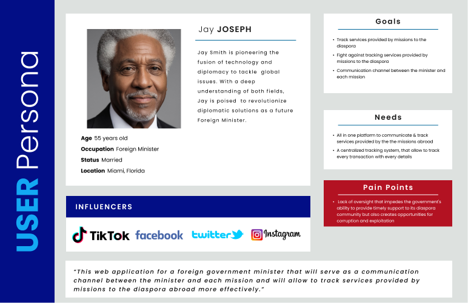
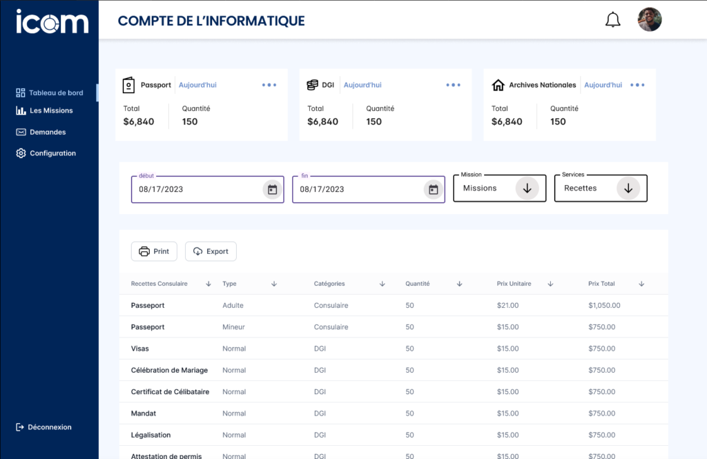
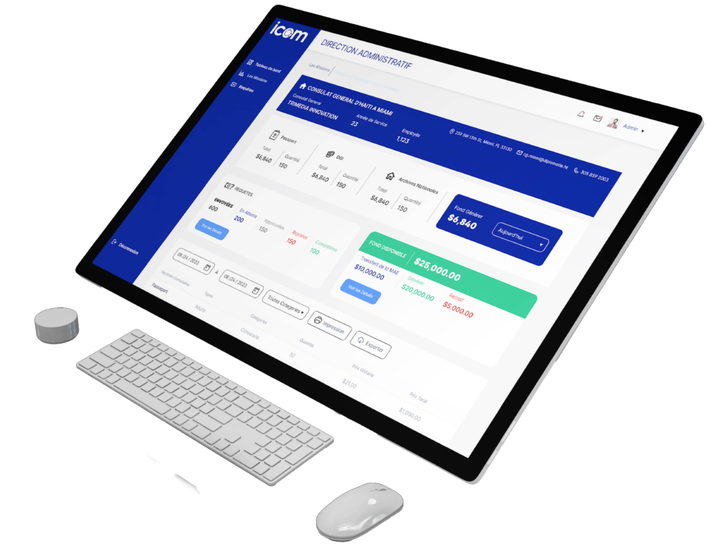

The minister needed a centralized way to monitor mission services delivered to diaspora communities abroad.
Case study
ICOM
A web application for a foreign government minister, designed to improve communication with missions abroad and track services delivered to the diaspora with more transparency and accountability.
I shaped the persona, problem statement, HMW, interaction flow, and high-fidelity interface direction.
The interface prioritizes service tracking, communication clarity, and oversight instead of decorative screens.
The prototype created a clearer model for mission-to-ministry communication and implementation discussion.

My contribution
- Led the UX/UI direction from research synthesis through interaction design and high-fidelity prototyping.
- Created the stakeholder-focused persona, problem statement, HMW, and hypothesis to align the product around transparency and accountability.
- Translated sketches into mid-fidelity flows and refined the prototype through testing with end users and stakeholders.
Challenge
The minister needed a centralized way to track services provided by missions to diaspora communities abroad. Without a reliable tracking mechanism, the government had limited visibility into service delivery, which created delays, weak accountability, and opportunities for corruption or misuse of resources.
The product needed to strengthen trust by making communication, tracking, and oversight clearer for the government and its missions.
Approach
- Created a stakeholder-focused user persona to keep the design grounded in the needs of the minister and mission teams.
- Defined the core problem around lack of oversight, delayed support, and reduced public trust.
- Framed a How Might We question around transparent and accountable mechanisms for diaspora support services.
- Moved from concept sketches into mid-fidelity flows, then tested and refined the high-fidelity prototype with end users and stakeholders.
Process evidence



Design decisions
The application gives the minister a clearer channel for monitoring services handled by missions abroad.
The design supports transparent oversight so service delivery can be reviewed and followed up more effectively.
Testing with end users and stakeholders helped refine usability, functionality, and implementation readiness.
Selected final screens
Outcome
The final web application concept creates a communication channel between the minister and each mission while improving the ability to track services provided to the diaspora abroad.
The result is positioned as a tool for more efficient service delivery, stronger accountability, and renewed trust in government operations.
- Created a centralized service-tracking model where previously there was limited oversight.
- Reduced ambiguity for stakeholders by defining a transparent flow for mission-to-ministry communication.
- Gave the government team a validated prototype ready for implementation discussions.